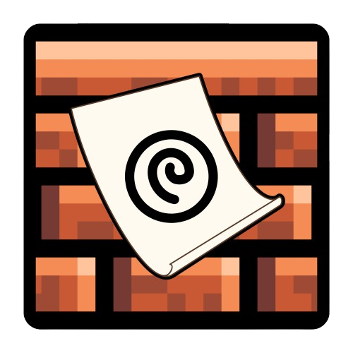

What I Built
- Custom paper overlay with multiple color profiles
- Distraction-free writing interface
- Eye comfort shield scheduler with adjustable brightness and color temperature
- Made specifically for the cinnamon architecture on Linux Mint

CinnaPaper is a specialized paper overlay designed for coders, novelists and world-builders. It provides multiple color profiles and a distraction-free writing interface to help users focus on their creative work while reducing eye strain.
The tool focuses on helping authors, and coders maintain low eye strain and cognitive load while keeping the creative process streamlined and organized.
I built CinnaPaper to address the challenges I faced while writing and world-building. I wanted a tool that would help me maintain focus, reduce eye strain, and keep my creative process organized without distractions.
The project reflects my interest in creating software that supports real creative work, rather than just looking good. It also demonstrates my ability to identify pain points in a workflow and develop practical solutions.
CinnaPaper shows that I can take a creative workflow pain point and turn it into a useful tool with clear structure and practical features.
It also reflects my interest in building software that supports real creative work instead of just looking good.
Cinnapaper is a personal project that I use daily for my writing and world-building. It has helped me maintain focus and reduce eye strain during long writing sessions, and it has become an essential part of my creative workflow.